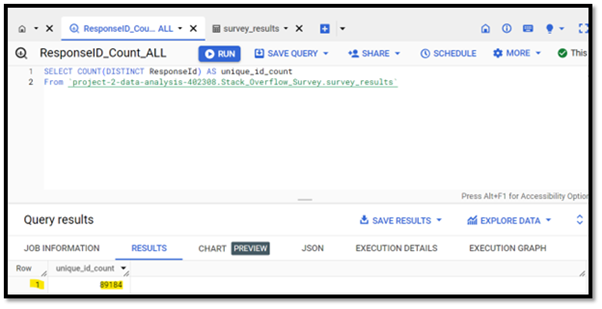
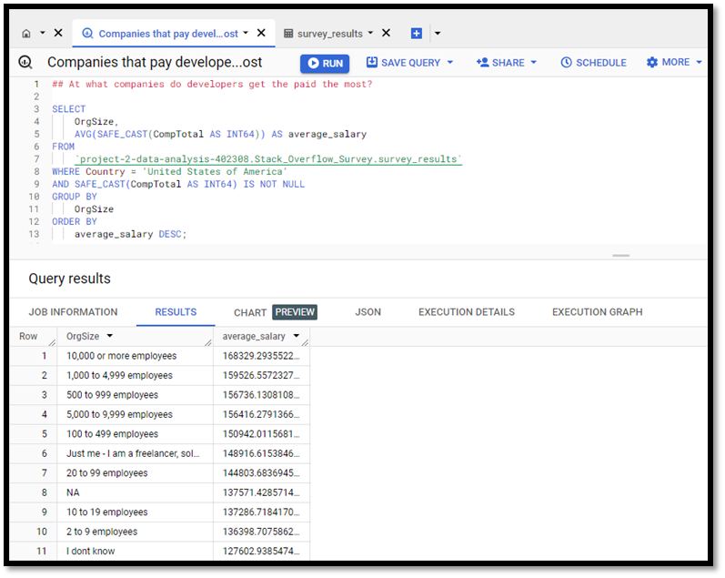
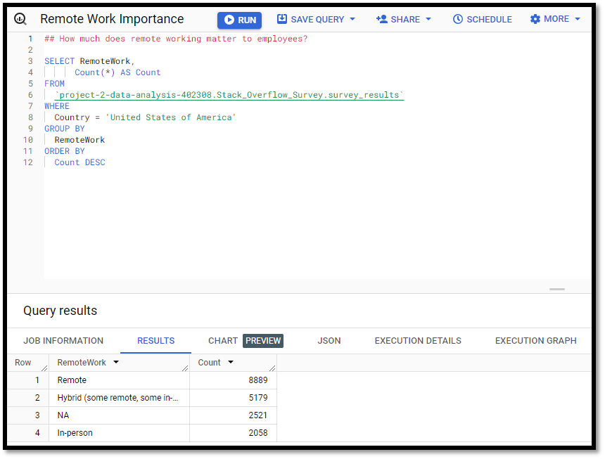
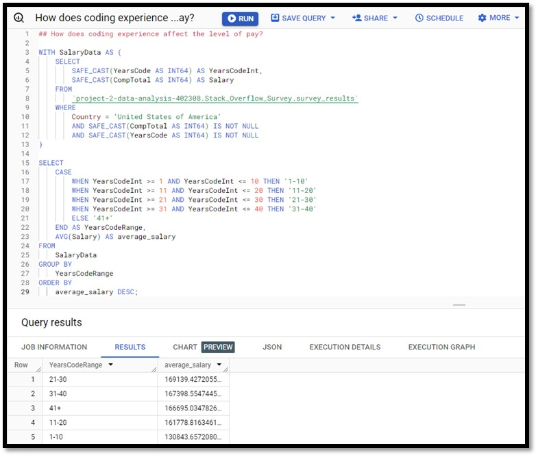
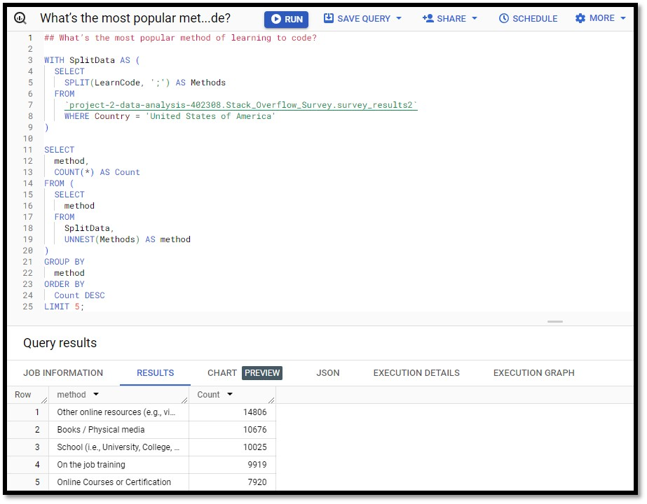
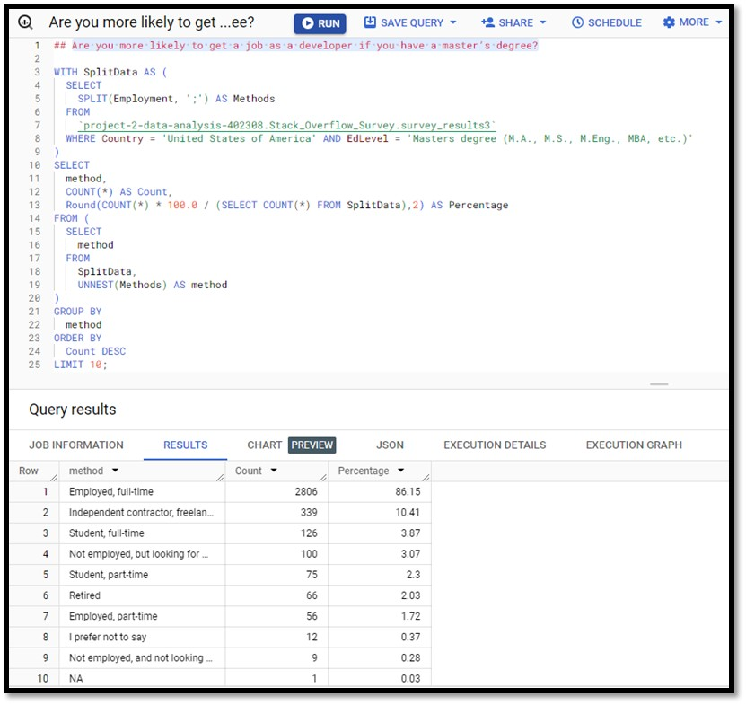

Introduction
In this project I will be going through the analysis of the 'Stack Overflow Developer Survey 2023' with the primary geography being the United States of America. I will be primarily focusing on the data analysis phase and how we can use SQL queries to gain better analysis and insights.
Statement of business task
One of the most important phases for an analyst is the analyse phase. Within this phase the analyst can solve the problems the company is looking to solve. Using the Data set ‘Stack Overflow Annual Developer Survey 2023’ I will be able to guide you on how I was able to solve the problems and gain better insights using SQL queries on BigQuery. I will solve Problems such as, which companies pay developers the most; How much remote working matters to employees; how coding experience affect levels of pay; Most popular method of learning to code; how likely you are to get job if you have a master’s degree.
Preparing the data
- In this analysis I am using the data 'Stack Overflow Annual Developer Survey 2023' listed here.
- Data is open source and ready for anyone to analyse.
- Contains Survey Data on 89184 anonymous developers various metrics such as Age, Employed, Education level, Years in coding, Country, Salary (total), etc.
- Dataset has 2 files in CSV format where one file is organized in wide format and the other file is the schema.
ROCCC Analysis
- Reliability : MEDIUM – Dataset was collected from 89184 anonymous but trusted community of developers from various backgrounds.
- Originality : MEDIUM – Survey is produced from a secondary source meaning that the data collected came from stack overflow itself.
- Comprehensive : HIGH – Contains a very comprehensive dataset using multiple columns on developer input from the survey.
- Current : HIGH – Data is 1 year old and is reproduced every year meaning the input of this survey is current and up to date.
- Cited : HIGH – data collector and source is well documented.
Data Selection
The focus here is to analyse and gain insights from the data that I have downloaded. There are only two datasets for this project and they are named:
Processing the Data
I will be using Excel & Big Query (RDBMS for SQL language scripts) for this project. I am using Excel to clean the data set like in the previous project and Big Query to verify the integrity and for the analysis of this Project.
Data Cleaning
Below is a step by step guide for the data cleaning process:- First, I download the dataset provided on the Stack Overflow website and unzip the files and I store it in a folder titled ‘Project2_Data_Analysis’.
- I open both csv files into Microsoft excel and look through the data that has been provided to me scanning for any errors, blank fields or duplicates particularly on columns that I need for my analysis.
- For all columns I have labelled a filter and open each column I may need scanning for potential errors. Comp total too high or too low a number may need to include market research salary ranges and include them as an average otherwise analysis would be skewed.
- Next, I notice that I need to clean the Ed level & Org size columns as there is an unnecessary value entered “’”. I remove these using the find and replace function in the home tab.
- As I am focusing on the United States of America geography, I notice that some of the salary’s inputs are far too low or too high. In order to not skew the results, I conducted some market research to find out the salary ranges of developer salaries and with the average I replace the lower/higher figure with this new figure.
- At what companies do developers get the paid the most?
- How much does remote working matter to employees?
- How does coding experience affect the level of pay?
- What’s the most popular method of learning to code?
- Are you more likely to get a job as a developer if you have a master’s degree?
Data Integrity
Once I am happy with that the data is cleaned, I move it then on into Big Query for analysis. I want to check the number if unique Ids in the table to validate the integrity and I can do this by writing the following query:  The result shows the dataset is consistent as we expected 89140 unique Response Id from the table and gives us the certainty of a high level of integrity when analysing the data.
Data Analysis
For SQL querying I need to first Identify the Problems that I am trying to Analyse. For this Analysis I am on Looking the United States of America Geography:
Answer: At what companies do developers get the paid the most? From the survey I only have information I have on the size of the company. In order to find out where the highest earners came from, I wrote a script that took the average salaries by the company size. There was an issue with the schema for Comptotal being a String text and not an integer and I was able to use the SAFE_Cast Function to get around this. From the Results I can conclude that Organizations with 10,000 or more employees are the highest paid.
Answer: How much does remote working matter to employees? As we can conclude from the results that Remote working is the most important with 8889 total employees currently working remotely in the USA followed by a Hybrid model of 5179 employees.
Answer: How does coding experience affect the level of pay? For this query I had to create a Common Table expression (CTE) and named it SalaryData while also using the SAFE_CAST function for the string columns. I then made a case statement to group the years of coding experience into ranges. From the analysis I concluded that the highest salary range when it came to coding experience is between 21-30 years of coding and then after that the range peaks.
Answer: What’s the most popular method of learning to code? Under this query I used the SPLIT clause to split the Data that were delimited by a semicolon in the LearnCode Column as this was a multiple-choice question and respondents could choose as many answers as they liked. Then using the UNNEST clause I was able to get a count for each method. From there I was able to conclude the top 5 methods for learning code were Other online resources (e.g., videos, blogs, forum), Books / Physical media, School (i.e., University, College, etc), On the job training and Online Courses or Certification.
Answer: Are you more likely to get a job as a developer if you have a master’s degree? In this Query I first wanted to break down all the different methods of employment types. After this I then got the count of all master’s degree education and then I was able to express this as a grand total rounding it to 2 decimal places. I am able to conclude that 86.15% who hold master’s degree in the united states are currently in employment.
Conclusion
In Conclusion I able to effectively analyse and provide insights by using SQL queries from the data provided to me and answering the objectives I had laid out. Now that I have come up with effective analysis, I will now be able to create visualizations to showcase this to my stakeholders. In the next project I will show how to create charts and dashboards using Tableau.
- © Data Analysis